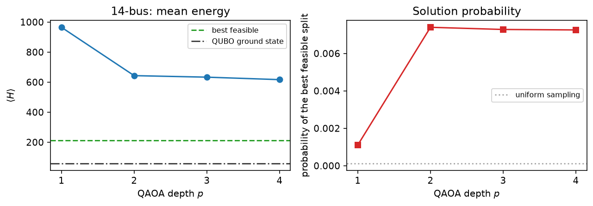
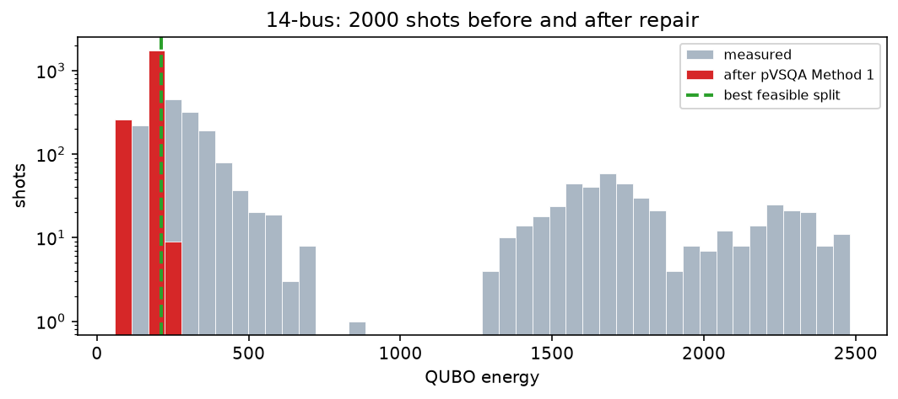
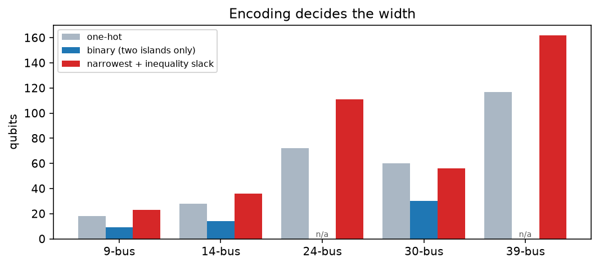

Split a power grid into islands with QAOA¶
-
Track
Power systems
-
Downloads
Model controlled islanding as a QUBO turned the problem of splitting a transmission network into a quadratic function of binary variables: the objective is the power interrupted by the cut lines, and generator coherency and island balance are penalties that vanish when the requirement holds. This tutorial takes that model, runs it on a quantum circuit, and deals with what comes back.
The headline difficulty is that a shallow QAOA circuit on a constrained problem returns mostly unusable bitstrings. Out of 2000 measurements of the 14-bus model below, around 25 describe a split the grid could actually operate. The fix is not a deeper circuit; it is to stop treating a measurement as an answer and start treating it as a starting point, which is what the postprocessing half of this tutorial does.
The pipeline as a whole — the coherency-informed QUBO, sampling it with a shallow circuit, and repairing what comes back — follows REGRID-QAOA [1]. The repair itself is the pVSQA procedure of [2].
The mechanics of mapping a QUBO onto gates — the substitution to spins, the phase separator, the mixer — are covered in Solve a QUBO with QAOA and are reused here without re-derivation.
Rebuilding the model¶
This tutorial stands alone, so the model is rebuilt here in condensed form. Only the 14-bus system and the binary encoding are needed: one qubit per bus, whose value names the island directly. The derivation, the comparison against the one-hot encoding, and the exhaustive check all live in the modeling tutorial.
import matplotlib.pyplot as plt
import numpy as np
from scipy.optimize import minimize
import fatqat as fq
import fatqat.operations as ops
SPEC = {
"edges": [
(0, 1, 154.73), (0, 4, 74.129), (1, 2, 72.076), (1, 3, 55.293),
(1, 4, 41.064), (2, 3, 23.472), (3, 4, 61.415), (3, 6, 28.074),
(3, 8, 16.080), (4, 5, 44.087), (5, 10, 7.3256), (5, 11, 7.7502),
(5, 12, 17.642), (6, 7, 5.7112e-11), (6, 8, 28.074), (8, 9, 5.2211),
(8, 13, 9.3683), (9, 10, 3.7916), (11, 12, 1.6111), (12, 13, 5.6168),
],
"generators": [0, 1, 2, 5, 7],
"loads": [1, 2, 3, 4, 5, 8, 9, 10, 11, 12, 13],
"coherency": [[0, 1, 2], [5, 7]],
"islands": 2,
}
SPEC["buses"] = sorted({b for i, j, _ in SPEC["edges"] for b in (i, j)})
SPEC["lines"] = [(i, j) for i, j, _ in SPEC["edges"]]
SPEC["weight"] = {(i, j): w for i, j, w in SPEC["edges"]}
NAME = "14-bus"
def line_weight(spec, i, j):
"""Return the flow on a line, accepting either endpoint order."""
return spec["weight"].get((i, j), spec["weight"].get((j, i), 1.0))
def build_qubo(spec, penalty=None, balance_weight=None):
"""Return (constant, linear, quadratic, variables), binary encoding only.
One variable per bus: 1 means island 1, 0 means island 0. Penalties are
multiples of the heaviest line, which bounds what any single reassignment
can save.
"""
buses, lines = spec["buses"], spec["lines"]
scale = max(line_weight(spec, i, j) for i, j in lines)
penalty = 2.0 * scale if penalty is None else penalty
balance_weight = 0.1 * scale if balance_weight is None else balance_weight
variables = [f"y[{bus}]" for bus in buses]
index = {name: position for position, name in enumerate(variables)}
constant, linear = 0.0, np.zeros(len(variables))
quadratic: dict[tuple[int, int], float] = {}
def add_quadratic(a, b, value):
i, j = index[a], index[b]
if i == j:
linear[i] += value # x * x == x for binary x
return
key = (i, j) if i < j else (j, i)
quadratic[key] = quadratic.get(key, 0.0) + value
def add_square(terms, offset, weight):
"""Add weight * (sum_k c_k v_k + offset)**2, expanded with x*x = x."""
nonlocal constant
constant += weight * offset**2
for name, c in terms:
linear[index[name]] += weight * (c * c + 2 * offset * c)
for a in range(len(terms)):
for b in range(a + 1, len(terms)):
add_quadratic(
terms[a][0], terms[b][0], 2 * weight * terms[a][1] * terms[b][1]
)
# Objective: a line costs its flow exactly when its endpoints disagree.
for i, j in lines:
w = line_weight(spec, i, j)
linear[index[f"y[{i}]"]] += w
linear[index[f"y[{j}]"]] += w
add_quadratic(f"y[{i}]", f"y[{j}]", -2 * w)
# Coherency: groups stay whole, and different groups stay apart.
groups = spec["coherency"]
for group in groups:
for a in range(len(group)):
for b in range(a + 1, len(group)):
add_square(
[(f"y[{group[a]}]", 1.0), (f"y[{group[b]}]", -1.0)], 0.0, penalty
)
for a in range(len(groups)):
for b in range(a + 1, len(groups)):
for i in groups[a]:
for j in groups[b]:
# 1 - (y_i + y_j - 2 y_i y_j) is 1 when the two agree.
constant += penalty
linear[index[f"y[{i}]"]] -= penalty
linear[index[f"y[{j}]"]] -= penalty
add_quadratic(f"y[{i}]", f"y[{j}]", 2 * penalty)
# Balance: islands of equal size, as an equality so no slack is needed.
target = len(buses) / spec["islands"]
add_square([(f"y[{b}]", 1.0) for b in buses], -target, balance_weight)
add_square([(f"y[{b}]", -1.0) for b in buses], len(buses) - target, balance_weight)
return constant, linear, quadratic, variables
def spectrum_of(constant, linear, quadratic, n):
"""Return every assignment's energy, indexed the way FatQat indexes states."""
codes = np.arange(1 << n)
columns = [((codes >> (n - 1 - p)) & 1).astype(bool) for p in range(n)]
energies = np.full(1 << n, constant)
for position, value in enumerate(linear):
if value:
energies[columns[position]] += value
for (i, j), value in quadratic.items():
energies[columns[i] & columns[j]] += value
return energies
def to_bits(index, n):
return np.array([(index >> (n - 1 - p)) & 1 for p in range(n)], dtype=np.int8)
def connected(members, lines):
"""Return whether the subgraph induced on a bus set is connected."""
if len(members) <= 1:
return True
inside = set(members)
adjacency = {bus: [] for bus in inside}
for i, j in lines:
if i in inside and j in inside:
adjacency[i].append(j)
adjacency[j].append(i)
start = next(iter(inside))
seen, stack = {start}, [start]
while stack:
for neighbor in adjacency[stack.pop()]:
if neighbor not in seen:
seen.add(neighbor)
stack.append(neighbor)
return seen == inside
def decode(spec, bits):
"""Return the island assignment a bitstring encodes, plus its checks."""
buses, lines, k = spec["buses"], spec["lines"], spec["islands"]
placement = {bus: int(bits[position]) for position, bus in enumerate(buses)}
islands = {g: sorted(b for b, i in placement.items() if i == g) for g in range(k)}
cut = [(i, j) for i, j in lines if placement[i] != placement[j]]
groups = spec["coherency"]
coherent = all(len({placement[b] for b in g}) == 1 for g in groups) and all(
not ({placement[b] for b in groups[a]} & {placement[b] for b in groups[c]})
for a in range(len(groups))
for c in range(a + 1, len(groups))
)
checks = {
"coherency": coherent,
"connected": all(connected(m, lines) for m in islands.values() if m),
"generators": all(any(b in m for b in spec["generators"]) for m in islands.values()),
"loads": all(any(b in m for b in spec["loads"]) for m in islands.values()),
"min buses": all(len(m) >= 2 for m in islands.values()),
}
return {
"islands": islands,
"cut_lines": cut,
"cut_weight": sum(line_weight(spec, i, j) for i, j in cut),
"checks": checks,
"feasible": all(checks.values()),
}
spec = SPEC
constant, linear, quadratic = build_qubo(spec)[:3]
variables = build_qubo(spec)[3]
N = len(variables)
spectrum = spectrum_of(constant, linear, quadratic, N)
# The target is the best split that passes every check, which is not the same
# as the QUBO's minimum: connectivity is verified after decoding, not penalized.
order = np.argsort(spectrum, kind="stable")
target_index = next(
int(i) for i in order if decode(spec, to_bits(int(i), N))["feasible"]
)
target_energy = float(spectrum[target_index])
best_split = decode(spec, to_bits(target_index, N))
ground = decode(spec, to_bits(int(order[0]), N))
broken = [check for check, ok in ground["checks"].items() if not ok]
print(f"{NAME}: {N} qubits, {len(quadratic)} pair terms")
print(f"QUBO ground state energy {spectrum[order[0]]:9.4f} "
f"violates: {', '.join(broken) if broken else 'nothing'}")
print(f"best feasible energy {target_energy:9.4f} "
f"cut weight {best_split['cut_weight']:.4f}")
print(f"islands {best_split['islands']}")
Runtime result
14-bus: 14 qubits, 91 pair terms
QUBO ground state energy 58.6764 violates: connected
best feasible energy 212.0250 cut weight 88.2410
islands {0: [0, 1, 2, 3, 4], 1: [5, 6, 7, 8, 9, 10, 11, 12, 13]}
The gap between those two numbers is the thing to keep in view. The QUBO's minimum is cheaper than the best feasible split, and it is cheaper precisely because it is allowed to be wrong: its islands are disconnected. An optimizer pointed at this model is being pointed slightly past the answer.
Running QAOA on the 14-bus model¶
The circuit construction is exactly the one from the QUBO tutorial: substitute
\(x_i = (1 - z_i)/2\) to get an Ising Hamiltonian, then emit an RZ per field
term, a CX-RZ-CX ladder per coupling, and an RX mixer per layer.
def to_ising(constant, linear, quadratic, n, tolerance=1e-9):
"""Rewrite a QUBO over spins, dropping coefficients that cancelled."""
offset = constant + linear.sum() / 2 + sum(quadratic.values()) / 4
field = -linear / 2
for (i, j), value in quadratic.items():
field[i] -= value / 4
field[j] -= value / 4
coupling = {key: value / 4 for key, value in quadratic.items()}
field = np.where(np.abs(field) <= tolerance, 0.0, field)
coupling = {key: value for key, value in coupling.items() if abs(value) > tolerance}
return offset, field, coupling
QUBO = (constant, linear, quadratic) # passed around by the repair functions
offset, field, coupling = to_ising(constant, linear, quadratic, N)
gamma_scale = max(abs(value) for value in coupling.values())
simulator = fq.simulator.Simulator(method="statevector")
def qaoa_program(betas, gammas, *, measure=False):
program = fq.Program(N, N if measure else 0)
for qubit in range(N):
program.add(ops.H, qubit)
for beta, gamma in zip(betas, gammas):
for qubit, value in enumerate(field):
if value != 0.0:
program.add(ops.RZ(2.0 * gamma * value), qubit)
for (i, j), value in coupling.items():
program.add(ops.CX, (i, j))
program.add(ops.RZ(2.0 * gamma * value), j)
program.add(ops.CX, (i, j))
for qubit in range(N):
program.add(ops.RX(2.0 * beta), qubit)
if measure:
program.measure_all()
return program
def probabilities(betas, gammas):
result = simulator.run(
qaoa_program(betas, gammas), shots=1, result_config={"final_state": True}
).result()
return np.abs(result.get_statevector()) ** 2
print(f"{NAME}: {N} qubits, {len(coupling)} couplings, "
f"{2 * len(coupling)} two-qubit gates per layer")
print(f"largest |J| = {gamma_scale:.3f}, Hamiltonian offset {offset:.3f}")
print(f"non-zero field terms: {int(np.count_nonzero(field))}")
Runtime result
14-bus: 14 qubits, 91 couplings, 182 two-qubit gates per layer
largest |J| = 216.622, Hamiltonian offset 1984.021
non-zero field terms: 0
The target to aim at is the best feasible split, not the QUBO ground state, so that is what the probability below is measured against. Depth is grown one layer at a time, seeding each depth from the previous solution.
optimal_indices = np.flatnonzero(np.isclose(spectrum, spectrum[target_index]))
uniform_probability = optimal_indices.size / spectrum.size
rng = np.random.default_rng(2024)
depths = [1, 2, 3, 4]
mean_energies, hit_probabilities = [], []
betas = gammas = None
for depth in depths:
def objective(parameters, depth=depth):
return float(probabilities(parameters[:depth], parameters[depth:]) @ spectrum)
if betas is None:
starts = [
np.concatenate(
[rng.uniform(0, np.pi, depth), rng.uniform(0, np.pi / gamma_scale, depth)]
)
for _ in range(8)
]
else:
starts = [
np.concatenate([betas, betas[-1:], gammas, gammas[-1:]]),
np.concatenate([betas, [0.0], gammas, [0.0]]),
]
best = min(
(
minimize(
objective, start, method="COBYLA",
options={"maxiter": 90, "rhobeg": np.pi / (4 * gamma_scale), "tol": 1e-8},
)
for start in starts
),
key=lambda outcome: outcome.fun,
)
betas, gammas = best.x[:depth], best.x[depth:]
distribution = probabilities(betas, gammas)
mean_energies.append(float(best.fun))
hit_probabilities.append(float(distribution[optimal_indices].sum()))
print(
f"p={depth}: mean energy {mean_energies[-1]:9.3f} "
f"P(best feasible) {hit_probabilities[-1]:.4f} "
f"{hit_probabilities[-1] / uniform_probability:5.1f}x uniform"
)
print(f"best feasible energy {target_energy:.3f}, "
f"QUBO ground energy {spectrum.min():.3f}")
Runtime result
p=1: mean energy 965.042 P(best feasible) 0.0011 9.1x uniform
p=2: mean energy 643.234 P(best feasible) 0.0074 60.6x uniform
p=3: mean energy 633.098 P(best feasible) 0.0073 59.6x uniform
p=4: mean energy 616.579 P(best feasible) 0.0073 59.4x uniform
best feasible energy 212.025, QUBO ground energy 58.676
figure, (left, right) = plt.subplots(1, 2, figsize=(9.0, 3.2))
left.plot(depths, mean_energies, "o-", color="#1f77b4")
left.axhline(target_energy, color="#2ca02c", linestyle="--", label="best feasible")
left.axhline(spectrum.min(), color="#444444", linestyle="-.", label="QUBO ground state")
left.set_xlabel("QAOA depth $p$")
left.set_ylabel(r"$\langle H \rangle$")
left.set_title(f"{NAME}: mean energy")
left.set_xticks(depths)
left.legend(fontsize=8)
right.plot(depths, hit_probabilities, "s-", color="#d62728")
right.axhline(uniform_probability, color="#aaaaaa", linestyle=":", label="uniform sampling")
right.set_xlabel("QAOA depth $p$")
right.set_ylabel("probability of the best feasible split")
right.set_title("Solution probability")
right.set_xticks(depths)
right.legend(fontsize=8)
figure.tight_layout()
Runtime result

The mean energy falls toward the QUBO ground state, which sits below the best feasible split — a reminder that the optimizer is minimizing the model, not the problem. The probability of measuring the split we actually want rises with depth, but it stays small. At this point a naive pipeline would need a very large shot budget, and most of what it collected would be unusable.
Postprocessing: pVSQA Method 1¶
The fix is to stop treating a measurement as an answer and start treating it as a starting point. The postprocessing variationally scheduled quantum algorithm (pVSQA) [2] walks each measured bitstring downhill to the nearest feasible assignment, so every shot yields a usable split.
Method 1 is the two-stage form. The first stage is that paper's Algorithm 1: repeatedly flip whichever single variable most decreases
where the violation term counts constraint breaches linearly rather than quadratically. That flatter penalty is the point — with \(A'\) above the objective's own scale, every local minimum of \(Q'\) is feasible, so the descent cannot stall on a violation.
Under the binary encoding there is no constraint left for the flip stage to enforce, so it reduces to a pure descent on the QUBO. That is not the whole job, as the next result shows.
def greedy_repair(qubo, bits, constraints=(), multiplier=0.0, max_flips=500):
"""Flip the single most improving variable until none improves (Algorithm 1)."""
constant, linear, quadratic = qubo
values = np.asarray(bits, dtype=np.int8).copy()
def score(candidate):
total = constant + float(linear @ candidate)
for (i, j), value in quadratic.items():
total += value * candidate[i] * candidate[j]
for members, lower, upper in constraints:
reached = float(candidate[list(members)].sum())
total += multiplier * max(0.0, reached - upper, lower - reached)
return total
current = score(values)
for _ in range(max_flips):
best_position, best_score = None, current
for position in range(values.size):
values[position] ^= 1
candidate_score = score(values)
values[position] ^= 1
if candidate_score < best_score - 1e-12:
best_position, best_score = position, candidate_score
if best_position is None:
break
values[best_position] ^= 1
current = best_score
return values
rng = np.random.default_rng(7)
trials = [rng.integers(0, 2, N) for _ in range(300)]
stage_one = [greedy_repair(QUBO, bits) for bits in trials]
feasible_after_stage_one = sum(decode(spec, bits)["feasible"] for bits in stage_one)
distinct = {"".join(map(str, bits)) for bits in stage_one}
print(f"stage 1 alone, from {len(trials)} random bitstrings:")
print(f" {feasible_after_stage_one} feasible, {len(distinct)} distinct results")
failing = decode(spec, stage_one[0])["checks"]
print(f" checks on a typical result: {failing}")
Runtime result
stage 1 alone, from 300 random bitstrings:
0 feasible, 34 distinct results
checks on a typical result: {'coherency': True, 'connected': False, 'generators': True, 'loads': True, 'min buses': True}
Every descent lands on the QUBO's ground state, and none of them is feasible — because that ground state is the disconnected split found earlier. The greedy stage is doing exactly what it was asked to do, and it is not enough.
The second stage handles what the QUBO deliberately left out. When an island falls into several connected components, each stray fragment can be fixed two ways: hand it to a neighboring island, or annex the buses along the shortest path back to the island's main body. Exile is cheaper, but it is impossible when a coherency group straddles the fragment. Both moves are constructed, scored with the model's own energy, and the better one wins.
def components_of(members, lines):
"""Return the connected components of the subgraph induced on a bus set."""
inside = set(members)
adjacency = {bus: [] for bus in inside}
for i, j in lines:
if i in inside and j in inside:
adjacency[i].append(j)
adjacency[j].append(i)
seen, found = set(), []
for start in sorted(inside):
if start in seen:
continue
group, stack = [], [start]
seen.add(start)
while stack:
current = stack.pop()
group.append(current)
for neighbor in adjacency[current]:
if neighbor not in seen:
seen.add(neighbor)
stack.append(neighbor)
found.append(sorted(group))
return found
def shortest_bridge(fragment, target, lines):
"""Return the buses strictly between two bus sets on a shortest path."""
adjacency = {}
for i, j in lines:
adjacency.setdefault(i, []).append(j)
adjacency.setdefault(j, []).append(i)
goal, source = set(target), set(fragment)
previous = {bus: None for bus in fragment}
queue = list(fragment)
while queue:
current = queue.pop(0)
for neighbor in adjacency.get(current, ()):
if neighbor in previous:
continue
previous[neighbor] = current
if neighbor in goal:
path, walk = [], current
while walk is not None and walk not in source:
path.append(walk)
walk = previous[walk]
return sorted(path)
queue.append(neighbor)
return []
def energy_of(qubo, bits):
constant, linear, quadratic = qubo
total = constant + float(linear @ bits)
for (i, j), value in quadratic.items():
total += value * bits[i] * bits[j]
return total
def repair_connectivity(spec, qubo, bits, max_moves=20):
"""Reconnect broken islands by exiling or annexing, whichever scores lower."""
values = np.asarray(bits, dtype=np.int8).copy()
positions = {bus: position for position, bus in enumerate(spec["buses"])}
def moved(source, buses, island):
candidate = source.copy()
for bus in buses:
candidate[positions[bus]] = island
return candidate
for _ in range(max_moves):
islands = decode(spec, values)["islands"]
placement = {bus: island for island, members in islands.items() for bus in members}
change = None
for island, members in islands.items():
if len(members) < 2 or connected(members, spec["lines"]):
continue
pieces = components_of(members, spec["lines"])
main = max(pieces, key=len)
options = []
for fragment in pieces:
if fragment is main:
continue
touching = {
placement[outside]
for i, j in spec["lines"]
for inside, outside in ((i, j), (j, i))
if inside in fragment and outside not in fragment
and placement.get(outside) not in (None, island)
}
for destination in touching or {1 - island}:
options.append(moved(values, fragment, destination))
bridge = shortest_bridge(fragment, main, spec["lines"])
if bridge:
options.append(moved(values, bridge, island))
if options:
change = min(options, key=lambda candidate: energy_of(qubo, candidate))
break
if change is None:
break
values = change
return values
def repair_coherency(spec, bits):
"""Put each coherency group back on a single, distinct island."""
values = np.asarray(bits, dtype=np.int8).copy()
positions = {bus: position for position, bus in enumerate(spec["buses"])}
taken = set()
for group in spec["coherency"]:
votes = {}
for bus in group:
island = int(values[positions[bus]])
votes[island] = votes.get(island, 0) + 1
order = sorted(range(spec["islands"]), key=lambda g: (-votes.get(g, 0), g))
choice = next((g for g in order if g not in taken), order[0])
taken.add(choice)
for bus in group:
values[positions[bus]] = choice
return values
def pvsqa_method1(spec, qubo, bits, rounds=5):
"""Alternate the flip descent and the connectivity repair until both pass."""
values = np.asarray(bits, dtype=np.int8).copy()
best = None
def consider(candidate):
"""Keep a candidate if it beats the best seen: feasibility, then energy."""
nonlocal best
solution = decode(spec, candidate)
score = (solution["feasible"], -energy_of(qubo, candidate))
if best is None or score > best[0]:
best = (score, candidate.copy())
return solution
for _ in range(rounds):
values = greedy_repair(qubo, values)
values = repair_coherency(spec, values)
if consider(values)["checks"]["connected"]:
break
values = repair_connectivity(spec, qubo, values)
# The reconnected state is a candidate in its own right; the next
# round's descent will usually abandon it for a lower, broken one.
consider(values)
return best[1]
repaired = [pvsqa_method1(spec, QUBO, bits) for bits in trials]
feasible_repaired = [bits for bits in repaired if decode(spec, bits)["feasible"]]
optimal_repaired = [
bits for bits in feasible_repaired
if abs(energy_of(QUBO, bits) - target_energy) < 1e-6
]
print(f"full Method 1, from the same {len(trials)} random bitstrings:")
print(f" feasible: {len(feasible_repaired):3d} / {len(trials)} "
f"({100 * len(feasible_repaired) / len(trials):.0f}%)")
print(f" optimal: {len(optimal_repaired):3d} / {len(trials)} "
f"({100 * len(optimal_repaired) / len(trials):.0f}%)")
print(f" best feasible energy reached {min(energy_of(QUBO, b) for b in feasible_repaired):.3f}, "
f"best possible {target_energy:.3f}")
print(f" {len({''.join(map(str, bits)) for bits in repaired})} distinct results")
Runtime result
full Method 1, from the same 300 random bitstrings:
feasible: 261 / 300 (87%)
optimal: 261 / 300 (87%)
best feasible energy reached 212.025, best possible 212.025
5 distinct results
Together the two stages turn most random bitstrings into feasible splits, and most of those are the best feasible split. Stage 2 is what made the difference: the same descent that produced nothing usable on its own now lands on the answer four times out of five.
That number is also a warning, and the next section takes it seriously.
A control the demonstration needs¶
Repairing random bitstrings already reaches the best feasible split most of the time. So before claiming that QAOA contributes anything, the honest thing to do is run the classical half on its own and compare. Uniform random bitstrings, repaired with the same Method 1, are the baseline; anything the quantum sampler is worth has to show up as a difference against it.
def optimal_rate(bitstrings):
"""Fraction of repaired samples that reach the best feasible split."""
hits = 0
for bits in bitstrings:
fixed = pvsqa_method1(spec, QUBO, bits)
if (
decode(spec, fixed)["feasible"]
and abs(energy_of(QUBO, fixed) - target_energy) < 1e-6
):
hits += 1
return hits / len(bitstrings)
BASELINE_SAMPLES = 300
rng = np.random.default_rng(11)
uniform_rate = optimal_rate([rng.integers(0, 2, N) for _ in range(BASELINE_SAMPLES)])
quantum_draw = simulator.run(
qaoa_program(betas, gammas, measure=True),
shots=BASELINE_SAMPLES,
simulation_config={"seed": 17},
).result()
quantum_bitstrings = [
np.array([int(character) for character in key], dtype=np.int8)
for key, shots in quantum_draw.get_counts().items()
for _ in range(shots)
]
quantum_rate = optimal_rate(quantum_bitstrings)
label = f"QAOA p={len(betas)} + repair"
print(f"reaching the best feasible split, {BASELINE_SAMPLES} samples each:")
print(f" {'uniform random + repair':<24}: {uniform_rate:.3f}")
print(f" {label:<24}: {quantum_rate:.3f}")
Runtime result
reaching the best feasible split, 300 samples each:
uniform random + repair : 0.807
QAOA p=4 + repair : 0.867
The two rates are close. On a 14-bus network the repair is strong enough to find the answer from almost anywhere, so the quantum sampler has nothing left to contribute, and no claim of advantage is supportable from this run. What these results do establish is that the pipeline is correct end to end: the model, the circuit, the repair, and the decoding all agree with an exhaustive classical reference.
Separating the two claims needs a network where the classical descent gets stuck — larger, more strongly meshed, or with tighter coherency groups. That is exactly where the qubit accounting at the end of this tutorial becomes the binding constraint, and it is the honest place to put the effort next.
What postprocessing does to a QAOA run¶
Applied to a real measurement, the effect is a shift in what the shot budget buys. Raw outcomes spread across the whole energy range and are mostly infeasible; repaired outcomes collapse onto feasible splits. Repair runs once per distinct outcome rather than once per shot, which is what keeps it affordable.
SHOTS = 2000
measured = simulator.run(
qaoa_program(betas, gammas, measure=True),
shots=SHOTS,
simulation_config={"seed": 5},
).result()
counts = measured.get_counts()
raw_energies, raw_weights, fixed_energies, fixed_weights = [], [], [], []
feasible_shots_raw = feasible_shots_fixed = 0
best_solution, best_value = None, np.inf
for key, shots in counts.items():
bits = np.array([int(character) for character in key], dtype=np.int8)
raw_energies.append(energy_of(QUBO, bits))
raw_weights.append(shots)
feasible_shots_raw += shots * decode(spec, bits)["feasible"]
fixed = pvsqa_method1(spec, QUBO, bits)
value = energy_of(QUBO, fixed)
fixed_energies.append(value)
fixed_weights.append(shots)
solution = decode(spec, fixed)
feasible_shots_fixed += shots * solution["feasible"]
if solution["feasible"] and value < best_value:
best_solution, best_value = solution, value
print(f"{len(counts)} distinct outcomes in {SHOTS} shots")
print(f"feasible shots before repair: {feasible_shots_raw:5d} / {SHOTS}")
print(f"feasible shots after repair: {feasible_shots_fixed:5d} / {SHOTS}")
print(f"\nbest split found, energy {best_value:.3f} "
f"(best possible {target_energy:.3f}):")
print(f" islands {best_solution['islands']}")
print(f" cut lines {[list(line) for line in best_solution['cut_lines']]}")
print(f" cut weight {best_solution['cut_weight']:.4f}")
print(f" checks {best_solution['checks']}")
Runtime result
1208 distinct outcomes in 2000 shots
feasible shots before repair: 24 / 2000
feasible shots after repair: 1733 / 2000
best split found, energy 212.025 (best possible 212.025):
islands {0: [0, 1, 2, 3, 4], 1: [5, 6, 7, 8, 9, 10, 11, 12, 13]}
cut lines [[3, 6], [3, 8], [4, 5]]
cut weight 88.2410
checks {'coherency': True, 'connected': True, 'generators': True, 'loads': True, 'min buses': True}
figure, axis = plt.subplots(figsize=(7.5, 3.4))
bins = np.linspace(
min(min(raw_energies), min(fixed_energies)),
np.percentile(np.repeat(raw_energies, raw_weights), 99),
45,
)
axis.hist(raw_energies, bins=bins, weights=raw_weights, color="#aab7c4",
label="measured", edgecolor="white", linewidth=0.4)
axis.hist(fixed_energies, bins=bins, weights=fixed_weights, color="#d62728",
label="after pVSQA Method 1", edgecolor="white", linewidth=0.4)
axis.axvline(target_energy, color="#2ca02c", linestyle="--", linewidth=2,
label="best feasible split")
axis.set_xlabel("QUBO energy")
axis.set_ylabel("shots")
axis.set_title(f"{NAME}: {SHOTS} shots before and after repair")
axis.set_yscale("log")
axis.legend(fontsize=8)
figure.tight_layout()
Runtime result

How wide does this get?¶
Qubit count is what decides whether a network is reachable at all, and it follows directly from the encoding and the components in use. Three numbers matter per system: the one-hot width \(n_\text{buses} \times k\), the binary width \(n_\text{buses}\) when \(k = 2\), and the width once the slack-carrying requirements are added. The two encodings and the reason they agree on the answer are developed in Model controlled islanding as a QUBO.
The slack-carrying components — "at least \(M\) buses", "at least one generator", "at least one load" — are inequalities, and an inequality needs a binary slack register per island to absorb the difference. That is \(\lceil \log_2(\cdot) \rceil\) extra qubits per island, per requirement. The balance requirement used above avoids all of it by being an equality instead, which is why it is the default here.
CATALOG = {
# buses lines islands generators loads
"9-bus": (9, 9, 2, 3, 4),
"14-bus": (14, 20, 2, 5, 11),
"24-bus": (24, 34, 3, 11, 13),
"30-bus": (30, 41, 2, 6, 24),
"39-bus": (39, 46, 3, 10, 29),
}
def slack_bits(maximum):
return max(1, int(np.ceil(np.log2(max(1, maximum) + 1))))
rows = []
print(f"{'system':8} {'buses':>6} {'islands':>8} {'one-hot':>8} {'binary':>7} "
f"{'+ slack':>8} {'narrowest':>10}")
for name, (buses, lines, islands, generators, loads) in CATALOG.items():
one_hot = buses * islands
binary = buses if islands == 2 else None
slack = islands * (
slack_bits(buses - 2) + slack_bits(generators - 1) + slack_bits(loads - 1)
)
narrowest = binary if binary is not None else one_hot
rows.append((name, one_hot, binary, narrowest + slack))
print(f"{name:8} {buses:6} {islands:8} {one_hot:8} "
f"{'-' if binary is None else binary:>7} {narrowest + slack:8} "
f"{narrowest:>10}")
Runtime result
system buses islands one-hot binary + slack narrowest
9-bus 9 2 18 9 23 9
14-bus 14 2 28 14 36 14
24-bus 24 3 72 - 111 72
30-bus 30 2 60 30 56 30
39-bus 39 3 117 - 162 117
figure, axis = plt.subplots(figsize=(7.5, 3.4))
labels = [row[0] for row in rows]
positions = np.arange(len(rows))
width = 0.27
axis.bar(positions - width, [row[1] for row in rows], width,
label="one-hot", color="#aab7c4")
axis.bar(positions, [row[2] if row[2] else 0 for row in rows], width,
label="binary (two islands only)", color="#1f77b4")
axis.bar(positions + width, [row[3] for row in rows], width,
label="narrowest + inequality slack", color="#d62728")
for position, row in zip(positions, rows):
if row[2] is None:
axis.annotate("n/a", (position, 1.5), ha="center", fontsize=7, color="#555555")
axis.set_xticks(positions)
axis.set_xticklabels(labels)
axis.set_ylabel("qubits")
axis.set_title("Encoding decides the width")
axis.legend(fontsize=8)
figure.tight_layout()
Runtime result

Two islands on the 30-bus system need 30 qubits with the binary encoding and 60 with one-hot — the difference between a statevector simulation that fits on a laptop and one that does not. Three-island systems cannot use the binary encoding at all, which is why the 24-bus and 39-bus rows show only the one-hot width; a base-\(k\) encoding recovers part of the saving there, at the cost of a messier decoding.
Where this leaves the problem¶
The pipeline is complete and each piece is checkable: the QUBO reproduces the operating requirements, the two encodings agree on the answer, the circuit construction matches an independent estimator, and every measured bitstring becomes a feasible split.
What it does not yet show is a quantum advantage, and it is worth being precise about why. On networks small enough to simulate, the classical repair reaches the optimum from any starting point, so the quantum sampler's contribution is unmeasurable. Making that contribution visible needs a network where the classical descent has somewhere to get stuck — and there, the width numbers above become the binding constraint rather than the runtime. Approaches aimed at exactly that constraint are developed in [7] and [8].
The parts most worth pushing on:
- Narrower encodings. A base-\(k\) assignment beats one-hot for more than two islands, and merging buses that will never separate shrinks the problem before any encoding is chosen [7]. Solving regional subproblems in sequence keeps the circuit width independent of the network size altogether [8].
- Constraint-preserving mixers. An XY mixer confines the state to the one-hot subspace, so amplitude is never spent on assignments the penalty would only have to reject.
- Warm starts. Seeding QAOA from a classical partition and letting the circuit search nearby uses shallow depth where it helps most.
- Noise. Every run here is noiseless. Attaching a
fatqat.NoiseModelto the simulator turns the same code into a study of how much depth this problem can actually afford on hardware.
References¶
- Y. Jiang, Y. Zhang, Z. Liang, Q. Guan, Y. Li, and G. K. Venayagamoorthy, "REGRID-QAOA: A Resource-Efficient Hybrid QAOA Framework for Physics-Constrained Power System Islanding", arXiv:2606.15083 (2026). The hybrid pipeline this tutorial implements.
- K. Shirai and N. Togawa, "Postprocessing Variationally Scheduled Quantum Algorithm for Constrained Combinatorial Optimization Problems", IEEE Transactions on Quantum Engineering 5, 3100415 (2024). The pVSQA procedure used for the repair.
- E. Farhi, J. Goldstone, and S. Gutmann, "A Quantum Approximate Optimization Algorithm", arXiv:1411.4028 (2014).
- H. You, V. Vittal, and X. Wang, "Slow coherency-based islanding", IEEE Transactions on Power Systems 19(1), 483–491 (2004). Where the coherent generator groups this model takes as input come from.
- K. Sun, D.-Z. Zheng, and Q. Lu, "Splitting strategies for islanding operation of large-scale power systems using OBDD-based methods", IEEE Transactions on Power Systems 18(2), 912–923 (2003). A classical approach to the same search, on the same IEEE test systems.
- A. Lucas, "Ising formulations of many NP problems", Frontiers in Physics 2, 5 (2014). The standard catalogue of constraint-to-penalty mappings.
- Y. Jiang, Z. Liang, Q. Guan, Y. Li, and G. K. Venayagamoorthy, "PACE-QAOA: Physics-Constrained Quantum Optimization for Qubit-Efficient Power System Islanding", arXiv:2608.02789 (2026). Compact encodings that reduce phase-separator cost on sparse grids.
- Y. Jiang, Z. Liang, Q. Guan, Y. Li, and G. K. Venayagamoorthy, "SPLIT-Q: A Scalable Sequential Quantum Computing Framework for Coherent Controlled Islanding", arXiv:2608.12711 (2026). Qubit-bounded sequential regional QAOA for larger networks.